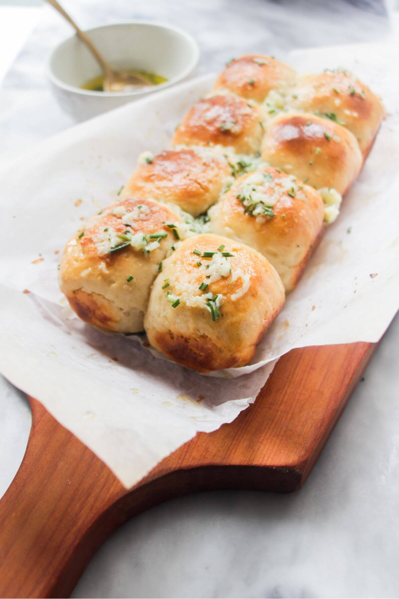

Garlic Dinner Rolls

Ingredients
- 1/2 cup warm whole milk, 105-110 degrees F
- 1/2 cup warm water, 105-110 degrees F
- 2 1/4 teaspoons active dry yeast
- 3 tablespoons sugar, divided
- 1/2 teaspoon kosher salt
- 1/3 cup unsalted butter, at room temperature
- 3/4 cup freshly grated Parmesan, divided
- 1 large egg
- 3 3/4 cups all-purpose flour, divided
- 2 tablespoons unsalted butter, melted
- 3 cloves garlic, minced
- 2 tablespoons chopped fresh parsley leaves
Instructions
- Combine milk, water, yeast, 1 tablespoon sugar and salt in a small bowl;
let stand until foamy, about 5 minutes.
- In the bowl of an electric mixer fitted with paddle attachment, beat butter,
1/2 cup Parmesan and remaining 2 tablespoons sugar on medium speed until light and fluffy,
about 2-3 minutes. Beat in egg until well combined. Beat in yeast mixture and 2 1/2 cups flour until a smooth batter forms.
- Using the dough hook, gradually add remaining 1 to 1 1/4 cups flour,
1/2 cup at a time, until a soft, smooth ball of dough is formed. The dough should feel elastic and slightly tacky to the touch.
Increase speed to medium-high and beat for 3 minutes.
- Lightly oil a large bowl or coat with nonstick spray; place dough in bowl, turning to coat.
Cover with a clean dishtowel and let stand in a warm spot until dough has doubled in size, about 45 minutes to 1 hour.
- Gently deflate dough by punching down. Roll into a 15-inch rope; cut into 15 1-inch pieces, pressing each piece into a disk, then shaping into a ball.
- Lightly oil a 9×13 baking dish or coat with nonstick spray. Place dough balls into the prepared baking dish; brush tops with butter and sprinkle with garlic.
Cover with a clean dishtowel and let stand in a warm spot until dough has doubled in size, about 30-45 minutes.
- Preheat oven to 375 degrees F. Sprinkle dough with remaining 1/4 cup Parmesan. Place into oven and bake until golden brown, about 18-22 minutes.
- Serve warm, garnished with parsley, if desired.
This recipe was originally published by:Damn Delicious